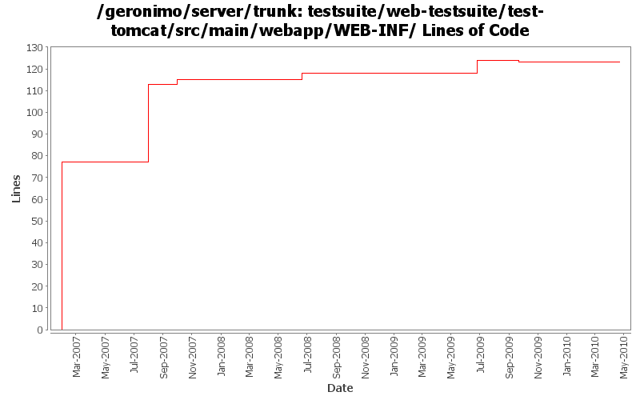

[root]/testsuite/web-testsuite/test-tomcat/src/main/webapp/WEB-INF

| Author | Changes | Lines of Code | Lines per Change |
|---|---|---|---|
| Totals | 12 (100.0%) | 154 (100.0%) | 12.8 |
| prasad | 4 (33.3%) | 113 (73.4%) | 28.2 |
| xuhaihong | 1 (8.3%) | 17 (11.0%) | 17.0 |
| djencks | 1 (8.3%) | 14 (9.1%) | 14.0 |
| gawor | 3 (25.0%) | 8 (5.2%) | 2.6 |
| jdillon | 2 (16.7%) | 2 (1.3%) | 1.0 |
| genspring | 1 (8.3%) | 0 (0.0%) | 0.0 |
GERONIMO-5262: Update a few more tests to use maven-failsafe plugin
2 lines of code changed in 1 file:
GERONIMO-4882 some doc update in G22 might be caused by bugs in code.
0 lines of code changed in 1 file:
We are configuring security differently now
14 lines of code changed in 1 file:
Fix the Tomcat configuration about realm and valve
17 lines of code changed in 1 file:
fixed test caused by changes in GERONIMO-4109
3 lines of code changed in 1 file:
fix tomcat tests
3 lines of code changed in 1 file:
* inserted AL headers
36 lines of code changed in 2 files:
Std props
2 lines of code changed in 2 files:
* deleted unused itests
* configured war-plugin at top to filter webapp resources
* configured ear-plugin at top to use filtered resourcesDir
* added test-jetty, test-security, test-tomcat, test-web-references (Thanx Krish)
* beautified some poms
* changed pkg names of java files in test-jsps and test-servlets
77 lines of code changed in 2 files: